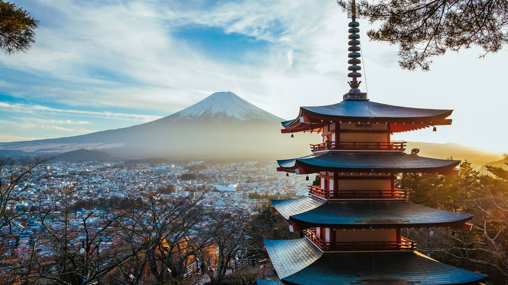
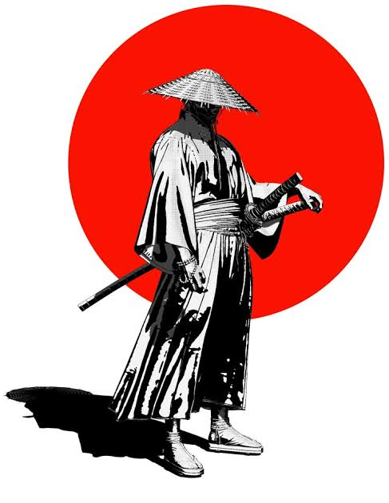
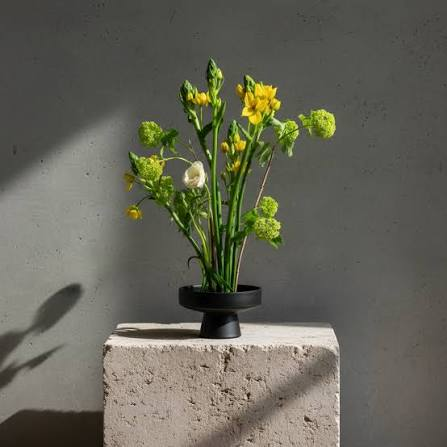

Japonsko
Základné informacie
| Hlavné mesto | (najväčšia metropolitná oblasť sveta) |
| Rozloha | cca 377 975 km² (viac ako 14 000 ostrovov; štyri hlavné sú Honšú, Hokkaido, Kjúšu a Šikoku) |
| Počet obyvateľov | cca 123 miliónov |
| Úradný jazyk | japončina |
| Mena | japonský jen (JPY, ¥) |
| Štátne zriadenie | Konštitučná monarchia s parlamentnou demokraciou |
| Náboženstvo | Prevažne šintoizmus a budhizmus |
| Najvyšší bod | Sopka Fudži (3 776 m n. m.) |

História Japonska

Kultúra a tradície
